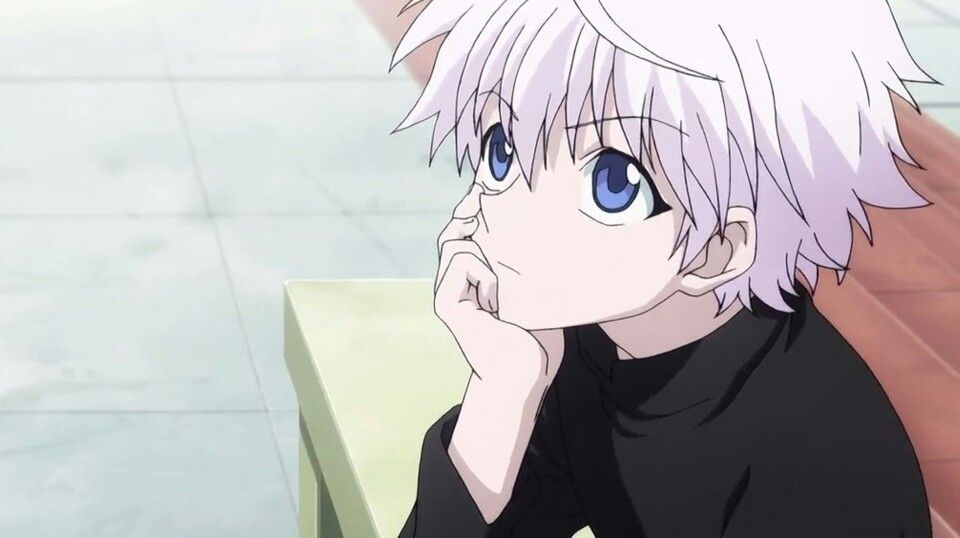

I was introduced to anime back in 2014 by my brother who had become a big fan of the newer stuff coming out at the time. Of course many of us grew up watching Dragon Ball Z or other great hits in our younger days but after I was reintroduced to the new stuff I was hooked.
Ever since I've been a huge fan of animes myself and have seen over 50 animated shows till this day. A lot of them can have similar elements or stories at times but all of them are great in their own way.
What's this about?
Vegeta from Dragon Ball Z
In this webpage I will talk about my top anime picks and why they were chosen.
It's over 9000!!
Let's start off with one of the most memorable quotes from the earlier days. This quote comes from Dragon Ball Z and it's one of the best momments from the series.
Memorable lines and momments like these make you remember shows and experiences for a long time.
What you can learn
Anime and many other shows don't necesarily portray reality all the time but they sure can make you relate to the story or elements very often.
They can give you great lessons about life and show you how certain situations can be handled. The lessons and experiences these shows give are a big reason that keep me being a fan.
Do you watch?
If you aren't a fan of anime or just haven't checked it out. My personal opinion is that everyone needs to give some of the top series a shot.
There's so much variety and diversity I'm sure you'll find a genre or story that you'll come to like.
What are my top favorites?
With so many great choices it's tough to decide.

Killua from HunterxHunter
My top 5 animes of all time
Below you'll find a table ranking my favorite animes